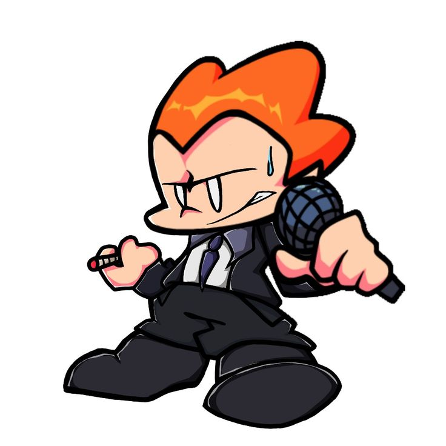

Tulzz
aristek front end
age: 15
yo menn kenalin nama gua Fathul, panggil aja gua patull di sirkuit jalanan atau di depan monitor. gw adalah seorang programmer yang ga dengerin aturan ga logis, ngerancang web dan elemen elemen nya sambil dengerin musik rap atau musik fnf ngebuat gw keluar dari zona nyaman. di dunia siber yang penuh dengan aturan membosankan ini, gw dateng bawa gaya baru yang nabrak semua gaya visual web yang ngemanjain mata lewat baris kode yang tajam dan agresif.
ngerancang blueprint untuk seorang arsitek front end kayak gw itu sama kayak nulis lirik rap di atas kertas usang di pinggir jalanan berdebu. gw ga peduli sama teori-teori yang ngebatesin kreativitas, karena bagi gua script itu adalah seni jalanan yang bebas, liar, gak ada aturan, dan penuh energi tanpa batas.
latar belakang gua tumbuh di lingkungan yang keras bikin mental gua sekuat beton jalanan pas ngadepin bug sekompleks apapun(ini karena gw udah nanggung belasan trauma dan kondisi maladaptive day dreaming yang parah banget dan bisa dibilang udah di tahap akhir) ga ada tuh kata menyerah atau error yang bisa bikin gua mundur buat ngejar mimpi gw. setiap error yang muncul langsung gua sikat habis pake logika jalanan yang taktis, cepat, dan pastinya efisien tanpa banyak basa-basi busuk(ya karena gw arsitek, jelas bisalah analisa possible problem karena gw punya waktu setelah rancang blueprint, bedalagi pas gw masih jadi programmer manual..
Fokus utama gua sekarang adalah ngebangun ekosistem web yang punya visual gila, berani tampil beda, dan bertolak belakang dengan desain template yang ngebosenin di pasar industri. gw pengen buktiin kalau dunia programming itu bisa dikombinasikan sama hip-hop, street art, dan graffiti yang penuh warna warni.
kombinasi antara kode yang bersih bgt, arsitektur kokoh, dan estetiknya underground yang brutal adalah identitas mutlak dari seorang patulz. gw bakal terus nge-push limit gua sampai titik darah penghabisan buat nyiptain karya-karya yang legendaris dan bakal diinget sama semua orang di dunia rap dan cyber. ini bukan cuma soal kerja, ini adalah jalan hidup gw, ini adalah representasi dunia rap street yang sesungguhnya.